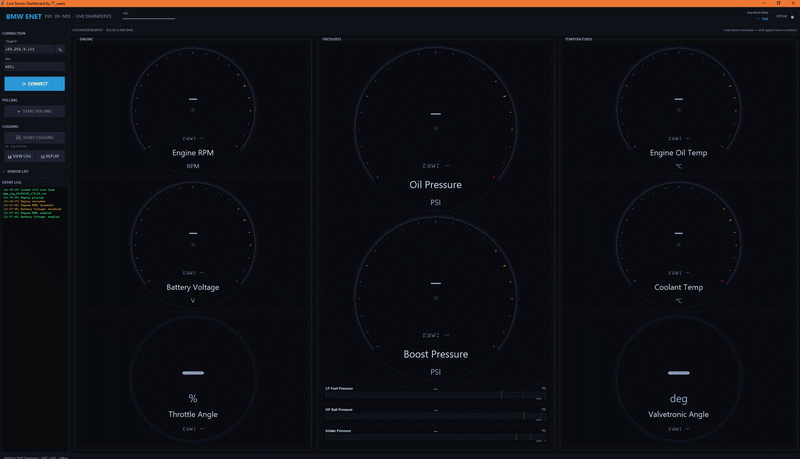
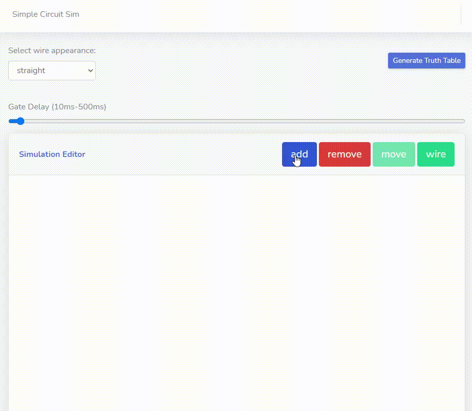

Hello, I'm
Computer Science graduate from the University of Toronto with professional experience in cloud virtualization at AMD and a passion for building interactive tools; from automotive diagnostics to circuit simulators. I enjoy working close to the hardware and making complex systems more accessible.
Skills & Technologies
Experience
AMD
Debugged and triaged Windows kernel-mode driver issues for Microsoft Azure services. Built automated PowerShell and Python testing frameworks for regression testing, and resolved a critical deadlock issue in deployed driver software serving Microsoft, Google, and Amazon — reducing bug resolution time by 30%.
University of Toronto
Led tutorials and technical labs for Principles of Computer Hardware and Programming. Provided one-on-one instruction and generated curriculum for exams and tests.
Ontario Ministry of Education
Redesigned the DocParser application in Java with MongoDB and Watson NLP, cutting processing time by 70%. Built the RepoManager app with Spring Web-Flow and SQL Server, earning commendation for innovative problem-solving from clients and the project lead.
Education
University of Toronto Entrance Scholarship
Coursework in engineering large software systems, internet and web systems, principles of computer hardware, and operating systems.
Portfolio

A real-time diagnostic dashboard for BMW F-chassis vehicles over Ethernet (ENET). Reads 11 live sensors from the N55 DME via UDS protocol, featuring circular gauges, bar gauges, CSV data logging, log replay with timeline scrubbing, and a companion matplotlib log viewer with multiple visualization modes.

An interactive logic circuit simulator with real-time simulation for combinational and sequential circuits. Build circuits with AND, OR, NOT, XOR, and more gates, then generate truth tables and boolean expressions.